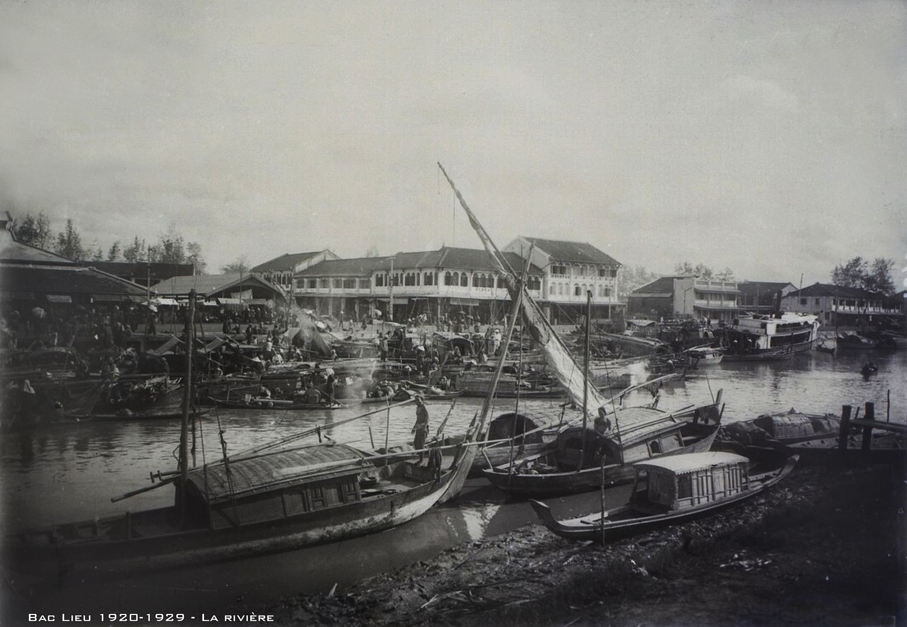
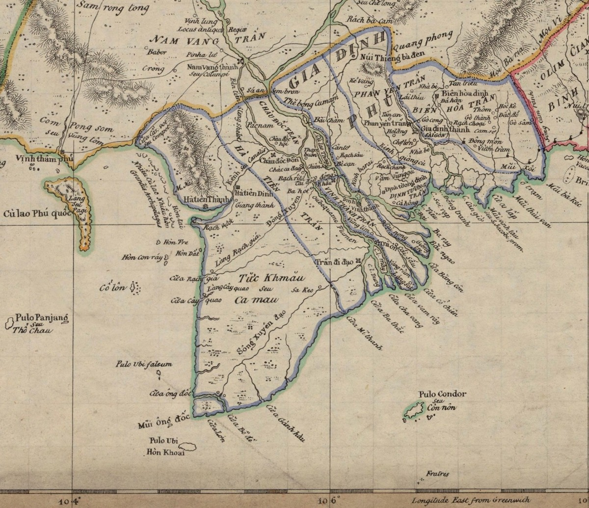
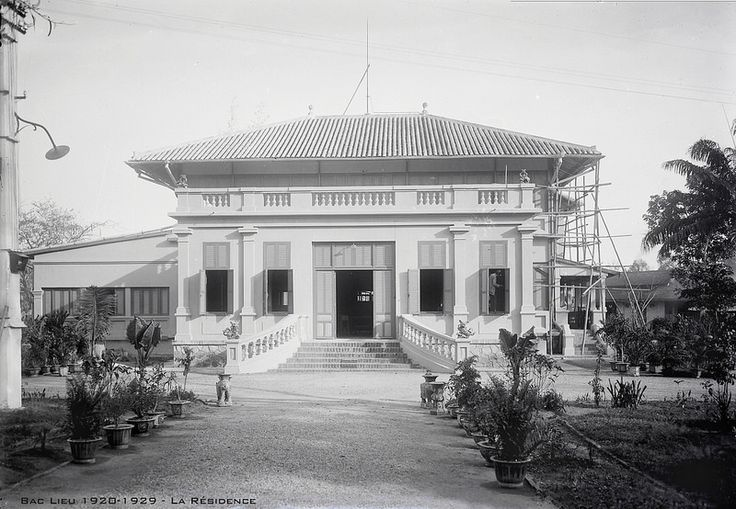
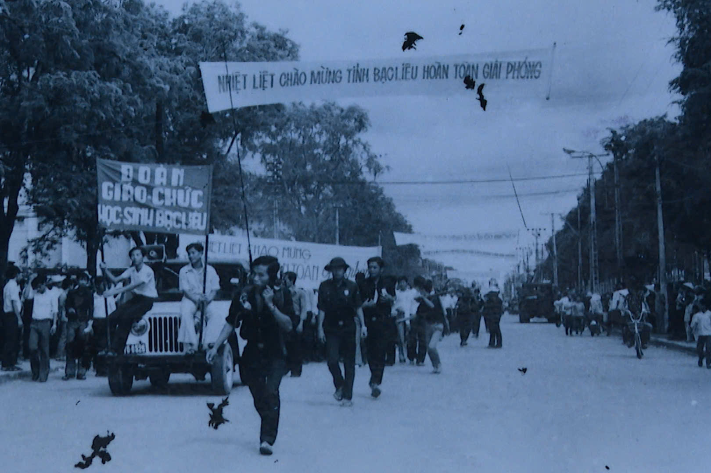
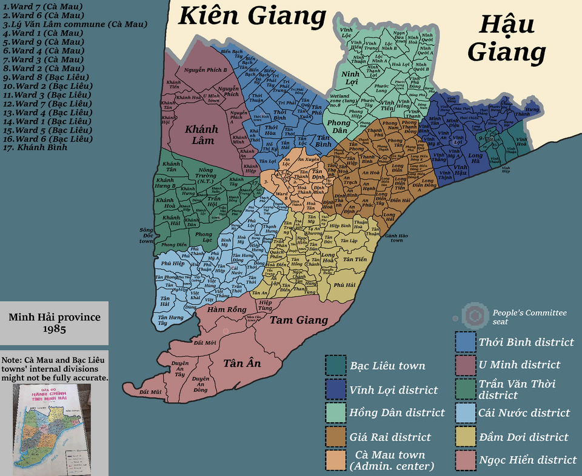
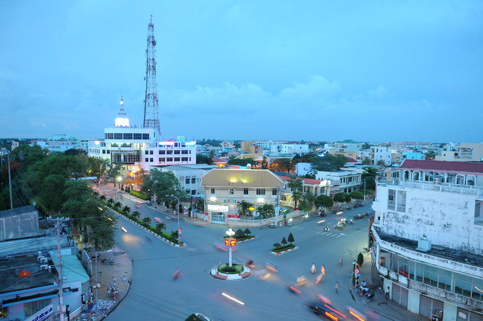
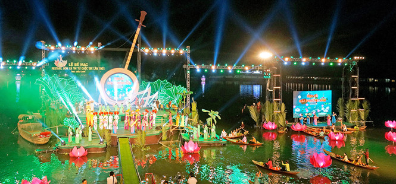
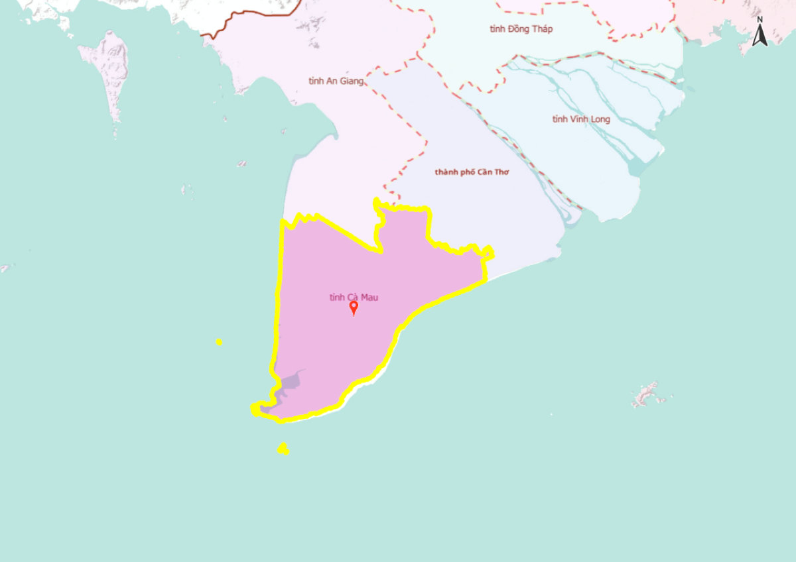

Nằm ở hạ lưu sông Mê Kông, Bạc Liêu xưa vốn là vùng đất hoang sơ bồi đắp bởi dòng phù sa trù phú. Những người lưu dân phương Nam đã cùng với người Khmer và người Hoa kiến tạo nên nếp sống, xóm chài và những cánh đồng muối mênh mông.

Những cộng đồng cư dân Kinh, Khmer và Hoa đến khai phá, lập làng và sinh sống. Qua thời gian, một vùng đất ven biển giàu bản sắc dần hình thành.

Bạc Liêu chính thức trở thành một đơn vị hành chính cấp tỉnh dưới thời Pháp thuộc. Đây là một trong những dấu mốc quan trọng trong quá trình hình thành địa danh và không gian hành chính Bạc Liêu.

Cao Văn Lầu sáng tác Dạ cổ hoài lang, tác phẩm về sau trở thành một trong những nền tảng quan trọng của nghệ thuật vọng cổ và sân khấu cải lương Nam Bộ. Từ một khúc nhạc nơi miền đất phương Nam, Bạc Liêu dần được biết đến như một vùng đất của âm nhạc và tình người.
Sau ngày đất nước thống nhất, Bạc Liêu và Cà Mau được hợp nhất, hình thành tỉnh Minh Hải.

Tỉnh Minh Hải được chia tách thành tỉnh Bạc Liêu và tỉnh Cà Mau. Bạc Liêu một lần nữa trở thành một đơn vị hành chính cấp tỉnh độc lập. Đây cũng là giai đoạn mở ra một chặng đường phát triển mới của Bạc Liêu.

Thị xã Bạc Liêu được nâng cấp thành thành phố Bạc Liêu, tạo động lực mới cho phát triển đô thị, thương mại, dịch vụ và du lịch.

Bạc Liêu đăng cai Festival Đờn ca tài tử quốc gia lần thứ I, tiếp tục khẳng định vị trí của vùng đất trong không gian văn hóa âm nhạc Nam Bộ.

Ngày 12/6/2025, Quốc hội thông qua nghị quyết về sắp xếp đơn vị hành chính cấp tỉnh, trong đó Bạc Liêu và Cà Mau được hợp nhất thành tỉnh Cà Mau. Từ 1/7/2025, tỉnh Cà Mau mới chính thức hoạt động.
Bạc Liêu từ đó bước sang một giai đoạn mới trong lịch sử hành chính.
